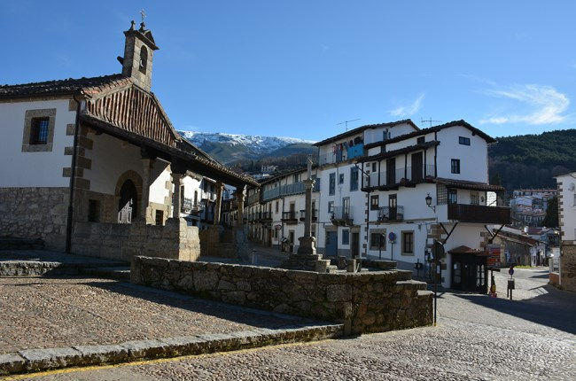

Este municipio forma parte de la comarca de la Sierra de Béjar, ubicándose a más de 1100 metros de altitud sobre el nivel del mar, en plena Reserva de la Biosfera de las Sierras de Béjar y Francia.
Ocupa una zona declarada Espacio Natural Protegido de Candelario, en la que abundan los bosques de robles y de castaños, así como algunas majestuosas cimas que superan los 2000 metros de altura.
Poco sabemos de su historia, vinculada desde el siglo XVI a los Zúñiga, sin que nos consten en la misma hechos relevantes. A partir del siglo XVIII la villa de Candelario conoció una etapa de bonanza económica, debido fundamentalmente a una más que prestigiosa industria chacinera, plasmada en la Historia del Arte pues Pedro Rico, el Choricero, fue inmortalizado por Bayeu en uno de sus tapices, lo que sin duda dio origen a una arquitectura doméstica de gran empaque monumental e indudable interés por lo que supone de elemento diferenciador con respecto al resto de pueblos de la sierra de Béjar e incluso de la cercana sierra de Francia, pues nada hay en ellas que se le parezca.
